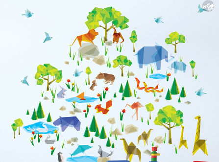

Origami Designs
Hello there. I'm Vihaan. Lockdowns can be a lot boring. And sitting at home doing nothing?
Well I am here to teach you something interesting that will be a great passtime. What am I talking about?
I present to you the Japanese art of Origami. The perfect way to kill time and make your fingers more flexible.
How I learnt Origami-
Follow me here-
SOME OF THE ANIMALS I HAVE MADE TO ADD IN MY ZOO: Click on the images to know how to make them

There are two types of camels: One humped or “dromedary” camels and two humped Bactrian camels.
Camels are very strong and can carry up to 900 pounds for 25 miles a day.
Their humps let them store up to 80 pounds of fat which they can live off for weeks and even months!
There are over 160 words for camel in Arabic alone.

The first chameleons evolved shortly after the extinction of dinosaurs 65 million years ago.
"Chameleon" Means "Ground Lion"
Chameleons become more active, social, and interested in breeding when exposed to UV rays.
In addition to perceiving UV light, they're great judges of distance, because each eye has excellent depth perception.

Cicadas are oval-shaped, winged insects that provide a buzzing and clicking song heard in nature throughout the summer.
Young cicadas eat liquid from plant roots, while molting cicadas eat twigs. Adult cicadas do not feed
When they leave their burrow, sometimes cicadas will make chimneys of mud over the exit.
Each species of cicada has a different song.

Giant pandas are good at climbing trees and can also swim.
An adult can eat 12–38 kilos of bamboo per day!
Prehistoric pandas lived up to 2 million years ago.
A giant panda is much bigger than your teddy bear.

The common pigeon also known as the rock pigeon, might be the first bird humankind ever domesticated.
They can find their way back to their nest from 1300 miles away.
They could identify visual patterns and therefore tell them apart.
They're more efficient multitaskers than people are.

Bears can reach a weight of between 150 and 370 kilogrammes depending on age and season.
In the wild, these omnivores spend up to 16 hours a day looking for food, which is reflected in the saying 'hungry as a bear'.
Brown bears in the wild are mainly active at dusk and at night.
Bears have a particularly good nose: their sense of smell enables them to sniff food at a distance of several kilometres.
So my creative origamites, hope you enjoyed all this. You have learnt a lot of things. You can now make your own zoo of animals. just like the one i made below

You've made it this far. Please be sure to give me a follow. Click on the "follow me here" to follow me. Thanks. Bye till next time :)
Back To Top